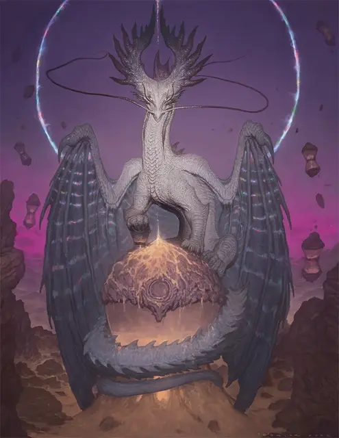

Древний дракон времени
Ancient Time Dragon
Громадный Дракон, нейтральный

Класс Доспеха 22 (природный доспех)
Хиты 536 (29к20 + 232)
Скорость 40 футов, летая 80 футов, лазая 40 футов
| мод | спас | ||
|---|---|---|---|
| СИЛ | 28 | +9 | +9 |
| ЛОВ | 14 | +2 | +10 |
| ТЕЛ | 26 | +8 | +16 |
| мод | спас | ||
|---|---|---|---|
| ИНТ | 27 | +8 | +8 |
| МДР | 18 | +4 | +12 |
| ХАР | 23 | +6 | +14 |
Навыки Восприятие +20, История +24, Магия +16, Скрытность +18
Чувства слепое зрение 60 футов, тёмное зрение 120 футов, пассивное Восприятие 30
Языки Все
Опасность 26 (90000 опыта)
Бонус мастерства +8
Особенности
Легендарное сопротивление (5/день). Если дракон проваливает спасбросок, он может вместо этого сделать спасбросок успешным.
Цикл перерождения. Если дракон умирает, его душа превращается в стальное яйцо и телепортируется на случайный план существования. Яйцо невосприимчиво ко всем типам урона и вылупляется в вирмлинга дракона времени [time Dragon Wyrmling] спустя 1к100 лет. Дракон сохраняет все воспоминания и знания, которые он приобрел в своей предыдущей жизни.
Действия
Мультиатака. Дракон совершает три атаки Раздиранием.
Раздирание. . Рукопашная атака оружием: +17 к попаданию, досягаемость 15 фт., одна цель. Попадание: 22 (3к8 + 9) рубящего урона плюс 10 (3к6) урона силовым полем.
Дыхание времени (перезарядка 5-6). Дракон выдыхает волну мерцающего света в виде 90-футового конуса. Немагические предметы и растительность в этой области, которые никто не несёт и не носит, обращаются в пыль. Каждое существо в этой области должно совершить спасбросок Телосложения Сл 24. При провале существо получает 52 (8к12) урона силовым полем и магически ослабляется, поскольку оно рассинхронизируется с текущим потоком времени. Пока существо находится в этом состоянии, броски атаки по нему совершаются с преимуществом, оно становится отравленным, а другие существа получают сопротивление ко всему наносимому им урону. При успехе существо получает только половину этого урона. Ослабленное существо может повторять спасбросок в конце каждого своего хода, оканчивая на себе действие данного эффекта после того, как оно трижды преуспеет в данном спасброске.
Временные врата (1/день). Дракон создает круглый портал диаметром 20 футов в пространстве между своими рогами или в незанятом пространстве, которое он может видеть в пределах 30 футов. Портал ведёт точно куда надо на любом плане существования в момент времени на протяжении до 8000 лет от настоящего, будь то прошлое или будущее. Портал действует в течение 24 часов или до тех пор, пока концентрация дракона не закончится (как при концентрации на заклинании). Портал имеет лицевую и заднюю стороны на каждом из планов, где он появляется. Пройти через портал можно, только пройдя через лицевую сторону. Всё, что делает это, перемещается в место назначения и появляется в ближайшем к порталу незанятом пространстве. Божества и другие планарные правители могут препятствовать открытию порталов, создаваемых драконом, в их присутствии или где-либо в пределах их владений.
Реакции
Дракон может использовать до трёх реакций за раунд, но только одну за ход.
Быстрый разрыв. После использования Легендарного сопротивления или в ответ на попадание броском атаки дракон совершает одну атаку Раздиранием.
Замедление времени. Сразу после того, как существо, которое дракон может видеть, заканчивает свой ход, дракон нацеливается на существо, которое он может видеть в пределах 90 футов, ослабленное его Дыханием времени. До тех пор, пока эффект ослабления не закончится на цели, её скорость становится равна 0, и её скорость никак не может увеличиться.
Задержка времени. Дракон получает половину урона от атаки, направленной против него, при условии, что он может видеть атакующего. После чего дракон может немедленно телепортироваться вместе с любым снаряжением, которое он носит, на расстояние до 60 футов в незанятое пространство, которое он может видеть.
Логово
Драконы времени часто устраивают логова в руинах древних цивилизаций или храмах мертвых богов, делая всё возможное, чтобы сохранить эти исторические места. Ненасытная тяга дракона времени к знаниям означает, что у него, скорее всего, есть несколько таких логовищ.
Показатель опасности древнего или взрослого дракона времени увеличивается на 1, когда столкновение происходит в его логове.
Действия логова
При значении инициативы «20» (в случае ничьей проигрывает всем конкурентам) дракон совершает действие логова, чтобы вызвать один из следующих эффектов; дракон не может использовать один и тот же эффект два раунда подряд:
Временной бросок. Дракон пытается метнуть существо, которое он может видеть в пределах 60 футов, вперед во времени. Цель должна преуспеть в спасброске Мудрости Сл 18, иначе получит 26 (4к12) урона психической энергией и продвинуться на 1 раунд вперед по времени. Цель, перемещенная вперед во времени, исчезает на некоторое время. Когда эффект заканчивается, цель снова появляется на том месте, которое она покинула или в ближайшем к этому незанятом пространстве, если её изначальное пространство занято.
Временное запаздывание. Дракон замедляет время для каждого существа в пределах 60 футов. До тех пор, пока значение инициативы не достигнет "20" в следующем раунде, пораженное существо может в свой ход либо переместиться, либо совершить действие, но не то и другое сразу. Существо также не может использовать реакции или бонусное действие.
Расхождение времени. Дракон выбирает пространство, в которое он может поместиться в пределах своего логова. Дракон существует одновременно в своём пространстве и в выбранном пространстве до тех пор, пока значение инициативы не достигнет "20" в следующем раунде. Всякий раз, когда он перемещается или совершает какое-либо действие, дракон выбирает, какая версия перемещается или действует. Если эффект или атака могут быть нацелены на оба пространства дракона одновременно, дракон подвергается воздействию только один раз.
Местные эффекты
Область, окружающая логово древнего или взрослого дракона времени, изменяется под действием его магии, создавая один или несколько из следующих эффектов:
• Замедление времени. Время искажается в пределах 3 миль от логова. Короткий отдых в этой области занимает 10 минут или 2 часа (по вашему выбору).
• Безвременье. Звери, гуманоиды и растения в пределах 3 миль от логова стареют всего на 1 год за каждые 10 прошедших лет.
Если дракон умирает, эти эффекты исчезают в течение 1к10 дней.
Описание
“Не затевай драк с драконами; особенно с теми, которые помнят, как поедали тебя”.
—Морте
Эти грациозные драконы используют силу времени, чтобы манипулировать прошлым, настоящим и будущим. Драконы времени рождаются с блестящей чешуей и рогами, которые едва ли больше шишек. По мере того, как они осваивают течение времени, их рога покрываются ветвящимися радужными прожилками, наводящими на мысль о путях и возможностях времени.
Древние драконы времени могут создавать временные врата, связанные с определенными временами и местами в мультивселенной. Используя их, они и союзные существа могут перемещаться в любую точку времени, чтобы влиять на моменты, определяющие судьбу или устранять угрозы за пределами течения времени. В результате своей способности путешествовать между эпохами драконы времени часто кажутся оторванными от обычного течения времени и имеют гибкий взгляд на то, что есть, что было и что будет.
Драконы времени ценят исторические записи, предметы, представляющие исчезнувшие культуры, и сокровища давно ушедших создателей. Они очарованы магией манипулирования временем и забытыми знаниями. Те, кто наткнется на клад дракона времени, могут найти бесценную историческую информацию из прошлых эпох.